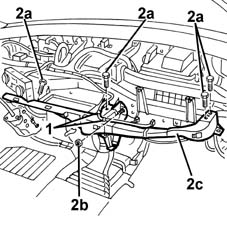
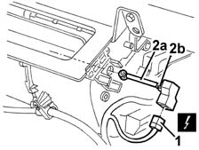
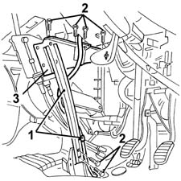

5010D18 top mixed air temperature sensor - r+r following electrical wiring check with heater case removed
- Path
- Procedures > 50 AUXILIARY UNITS > 5010 HEATING/VENTILATION - MISCELLANEOUS > 5010D air temperature recording system > 5010D18 top mixed air temperature sensor - r+r following electrical wiring check with heater case removed
- Kind
- repair procedure (removal / refitting; the operation number is the code)
- Applies to
- all engines; all production periods
- Interactive page
- https://sloeber94.github.io/elrnDB-fMltpl/en/#/2891772
Applies to: all engines; all production periods; only with equipment: Automatic Air Conditioning
 Removing
Removing
 Refitting
Refitting- 7040A24 lower facia cover trim - r+r
7040A09 passenger air bag compartment cover - r r
2125C24 gear lever knob - r + r
7065C10 air conditioning control panel - r+r
7040A11 control panel lid - r + r
5560B10 analogue control panel - r+r
7040A77 glass holder on facia trim - r r
7010M16 rear electric window enablement switch - r+r
7040A96 facia glove compartment flap (1) lh or rh - r r (right and left)
5580C26 LOCK BARREL KEY/SWITCH for deactivating passenger 'AIR BAG - R.R.
7040A44 facia lh side cover - r r
7040A45 facia rh side cover - r r
7040A25 central facia trim - r r
5540C18 headlamp/light cluster alignment correction motor switch - r+r
7025A24 boot lid opening lever - r+r
7040L42 sill plate connection of one front door (1), lh or rh - r r (right and left)
1. Working in the passenger compartment, disconnect the retainers for the Air Bag wiring.
2. Undo the bolts (2a) and the nut (2b) fixing the crossmember (2c), then remove the crossmember.

Applies to: all engines; all production periods; only with equipment: Automatic Air Conditioning
1. Disconnect the electrical connection for the sensor.
2. Remove the sensor (2a) releasing it from the retainers (2b).

Applies to: all engines; all production periods; only with equipment: Automatic Air Conditioning
Refitting
RemovingCheck that the sensor is not damaged and, if necessary check the electrical properties.
Place the sensor in position and fit it on the retainers.
Connect the electrical connection.
Position the crossmember and fix it using the bolts and the nut.
Connect the Air Bag wiring to the retainers.
7040L42 sill plate connection of one front door (1), lh or rh - r r (right and left)
7025A24 boot lid opening lever - r+r
5540C18 headlamp/light cluster alignment correction motor switch - r+r
7040A25 central facia trim - r r
7040A45 facia rh side cover - r r
7040A44 facia lh side cover - r r
5580C26 LOCK BARREL KEY/SWITCH for deactivating passenger 'AIR BAG - R.R.
7040A96 facia glove compartment flap (1) lh or rh - r r (right and left)
7010M16 rear electric window enablement switch - r+r
7040A77 glass holder on facia trim - r r
5560B10 analogue control panel - r+r
7040A11 control panel lid - r + r
7065C10 air conditioning control panel - r+r
2125C24 gear lever knob - r + r
7040A09 passenger air bag compartment cover - r r
- 7040A24 lower facia cover trim - r+r
Check the operation of the system using the Examiner or another tester.
Applies to: all engines; all production periods; only with equipment: Automatic Air Conditioning and Right hand drive
Removing
Refitting7040A09 passenger air bag compartment cover - r r
2125C24 gear lever knob - r + r
7065C10 air conditioning control panel - r+r
7040A11 control panel lid - r + r
5560B10 analogue control panel - r+r
7040A77 glass holder on facia trim - r r
7010M16 rear electric window enablement switch - r+r
7040A96 facia glove compartment flap (1) lh or rh - r r (right and left)
5580C26 LOCK BARREL KEY/SWITCH for deactivating passenger 'AIR BAG - R.R.
7040A44 facia lh side cover - r r
7040A45 facia rh side cover - r r
7040A25 central facia trim - r r
5540C18 headlamp/light cluster alignment correction motor switch - r+r
7025A24 boot lid opening lever - r+r
7040L42 sill plate connection of one front door (1), lh or rh - r r (right and left)
5010B24 under-facia air ducts r r
1. Working under the steering wheel, disconnect the Air Bag wiring from the gear lever mounting.
2. Undo the bolts fixing the gear lever mounting.
3. Move the gear lever mounting.

Applies to: all engines; all production periods; only with equipment: Automatic Air Conditioning and Right hand drive
1. Disconnect the electrical connection for the sensor.
 | Name | Connector |
|---|---|---|
1 | Treated air sensor |
2. Remove the sensor (2a) releasing it from the retainers (2b).
Applies to: all engines; all production periods; only with equipment: Automatic Air Conditioning and Right hand drive
Refitting
RemovingCheck that the sensor is not damaged.
Place the sensor in position and fit it on the retainers.
Connect the electrical connection.
Position the gear lever support and secure it using the bolts.
Connect the Air Bag wiring to the gear lever mounting.
5010B24 under-facia air ducts r r
7040L42 sill plate connection of one front door (1), lh or rh - r r (right and left)
7025A24 boot lid opening lever - r+r
5540C18 headlamp/light cluster alignment correction motor switch - r+r
7040A25 central facia trim - r r
7040A45 facia rh side cover - r r
7040A44 facia lh side cover - r r
5580C26 LOCK BARREL KEY/SWITCH for deactivating passenger 'AIR BAG - R.R.
7040A96 facia glove compartment flap (1) lh or rh - r r (right and left)
7010M16 rear electric window enablement switch - r+r
7040A77 glass holder on facia trim - r r
5560B10 analogue control panel - r+r
7040A11 control panel lid - r + r
7065C10 air conditioning control panel - r+r
2125C24 gear lever knob - r + r
7040A09 passenger air bag compartment cover - r r
Check the operation of the system using the Examiner or another tester.
Topics linked from this page (22)
- 2125C24 gear lever knob - r + r
- 5010B24 under-facia air ducts r r
- 5540C18 headlamp/light cluster alignment correction motor switch - r+r
- 5560B10 analogue control panel - r+r
- 5570T80 car radio unit - r+r
- 5580C26 LOCK BARREL KEY/SWITCH for deactivating passenger 'AIR BAG - R.R.
- 7010M16 rear electric window enablement switch - r+r
- 7025A24 boot lid opening lever - r+r
- 7040A04 facia lower trim-r r
- 7040A09 passenger air bag compartment cover - r r
- 7040A11 control panel lid - r + r
- 7040A25 central facia trim - r r
- 7040A37 fuse box cover - r r
- 7040A44 facia lh side cover - r r
- 7040A45 facia rh side cover - r r
- 7040A77 glass holder on facia trim - r r
- 7040A96 facia glove compartment flap (1) lh or rh - r r
- 7040L20 tunnel trim - r r
- 7040L42 sill plate connection of one front door (1), lh or rh - r r
- 7065C10 air conditioning control panel - r+r
- 7065C42 ashtray (one) r+r
- K87 Treated air sensor